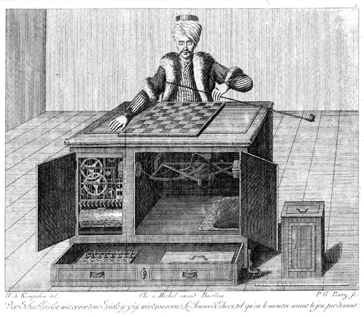
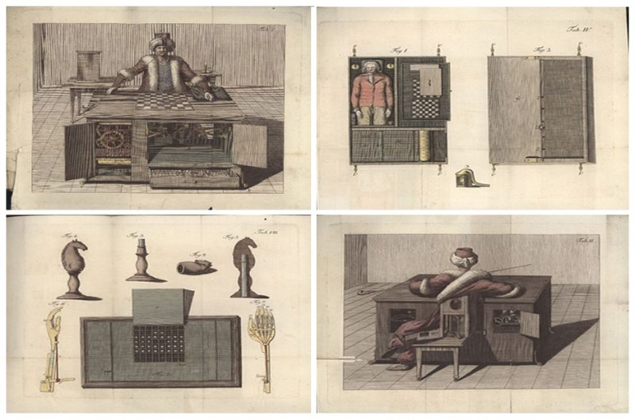
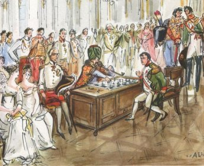

⚠ ERROR DEL SISTEMA
╔══════════════════╗
║ ┌─────────────┐ ║
║ │ (ó_ó) │ ║
║ │ /|\ Hola. │ ║
║ │ | │ ║
║ └─────────────┘ ║
╚══════════════════╝
// ARCHIVO HISTÓRICO — TURCO MECÁNICO 1770–1854
▸ Pincha cada tarjeta para leer el artículo

El autómata, 1770Von Kempelen presenta su máquina.

El secreto, ~1770Lo que nadie debía ver.

Vs. Napoleón, 1809El Turco humilló al emperador.

El legado, 2005→Una ironía de 250 años.